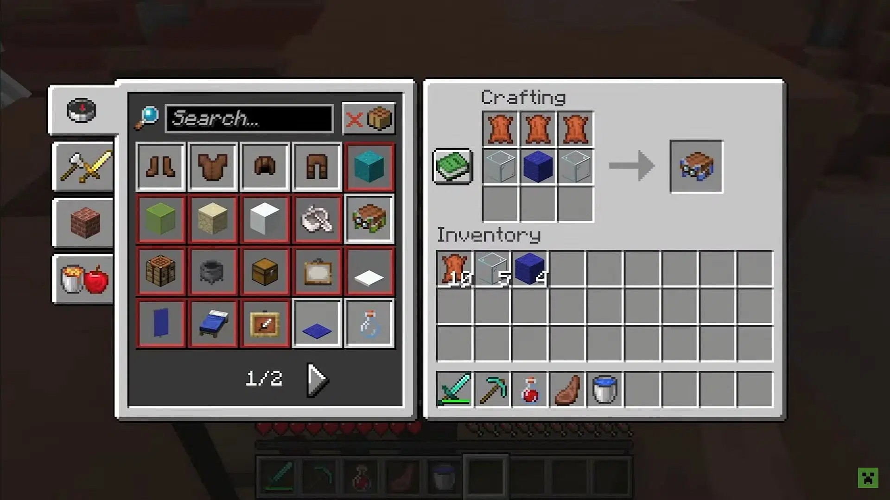
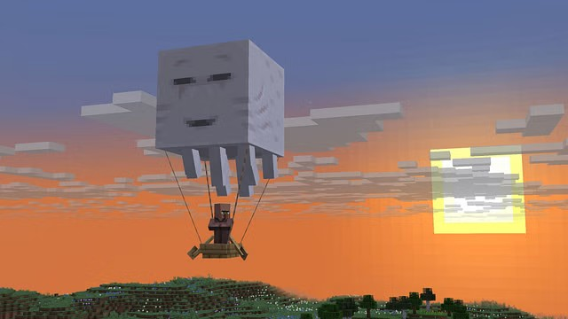

Revving the Reaver...
Revving the Reaver...
The long old request has been finally achieved. Long are the days of trying to find a dungeon to get a saddle, behold! Craftable saddles! Mojang just released Minecraft Snapshot 25w20a and decided recently to add a crafting recipe for the saddle to for the player to get the new ghast harness.
With the ghast harness, they players can equip it to their happy ghast so they can ride it and fly with the ghast. It also allows up to 4 players to ride the ghast and lets the players that use lead on the ghast to carry entities, like boats or horses, to have control on the elevation and direction of the ghast.
To learn more about this snapshot, check the minecraft website for more information. Click here!